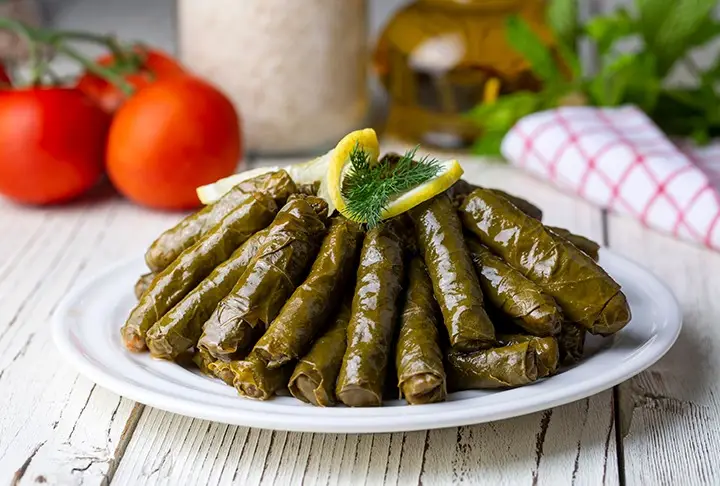

Sarma Recipe

Ingredients
- 2 big onions
- 1/3 cup olive oil
- 1 cup good quality rice
- about 2 tbsp pine nuts (It is used traditionally, I didn't have on hand)
- 1 tsp each salt, sugar, allspice, black pepper
- 1+1/2 tsp cinnamon
- 2 heaped tbsp currants
- 1/2 bunch fresh dill
- about 300gr. more or less grape leaves washed a couple of times until most of the salt is gone, you can chew
some to taste the salt üôÇ (If you buy preserved you can keep the rest in its salty water or freeze it.)
- about a cup fresh or frozen pitted cherries (optional)
- for the cooking sauce:
- juice of a half lemon
- about 1/3 cup mineral / sparkling water
- about half cup hot water (cook the grape sarma/dolmas on low heat, let it soak the water, and cook in the
steam. Don't add much water to it. Taste the Sarmas and drizzle more water if needed and continue to cook
until it is soft)
- more olive oil on top
Steps
- Cut the onions in half, then half again and slice them thinly.
- In a big wide pan add olive oil and onions. Sautee the onions, stirring frequently until they have golden
colors about 5 minutes.
- Add the sugar, then washed and drained rice. Stir for about 2 minutes.
- Add salt, cinnamon, allspice, black pepper, and currants and stip for a couple of more minutes.
- Add about half cup hot water and cook halfway until the rice soaks the water.
- Turn off the heat. Finely chop the dill and add it. Stir gently and let it cool down to handle.
How to Wrap Sarma
I used the grape leaves that I preserved in salt last year for the recipe.
The preserved leaves usually have too much salt. So make sure to wash it enough to get rid of most of
the salt. Sometimes you need to soak in hot water and rinse it. But also be careful not to overcook
otherwise your leaves can tear while wrapping.
- Place a leaf shiny side down and the stem side looking toward you. Take out the stem if has any. Place about
1-2 tsp (depend on the size of the leaf) Add one piece of sour cherry on it and fold the leaf over and from
the sides and roll it straight and tightly as possible.
- Arrange them in a wide pan. If you have torn or very hard and big leaves you can cover the bottom of the pan
with them to prevent the sarmas burn and for a deeper flavor.Ï
- Try to choose a wide pan so the rolled sarmas are not layered more than 3 layers for even cooking.
Cooking Sauce For The Sarmas:
Squeeze juice of half lemon, drizzle over sarmas. Place remaining sour cherries between the sarmas. Pour
over 1/3 cup mineral sparkling water over and add about half cup more water and a tsp of more sugar.
Cook the “Yaprak Sarma” stuffed grape leaves on very low heat, lid closed. You don’t want to have cooking
water left when the sarmas are done. So it is better to cook the sarma with less water with its steam and
check it frequently after a time. When there is no water left check one sarma from top if the leaves and the
rice filling is cooked or not. If not you can always drizzle more water and cook for more time on low
flame.
Bon Appetit!